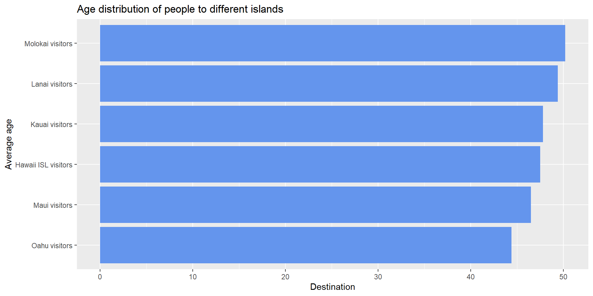
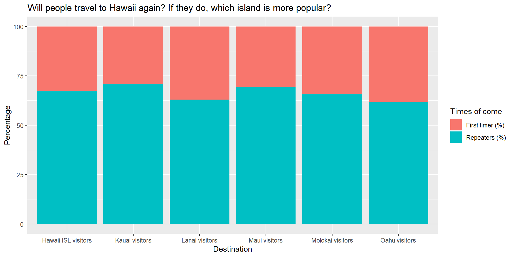
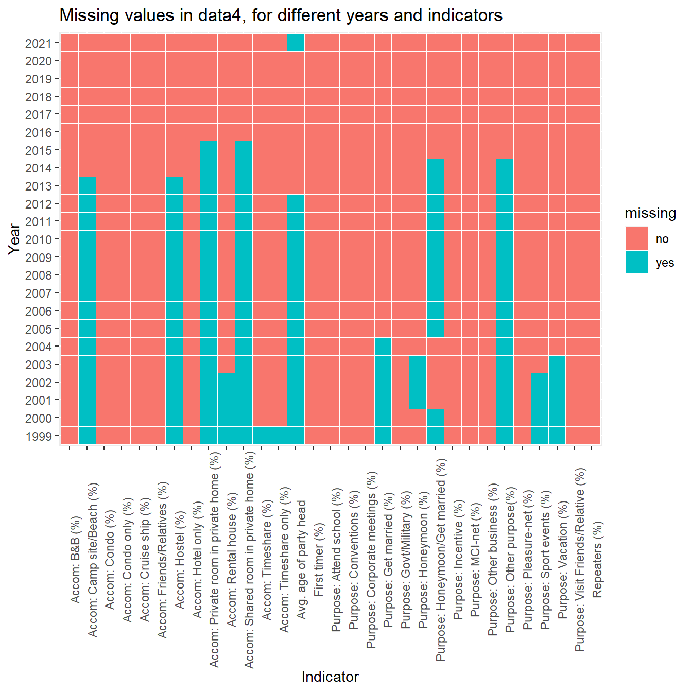
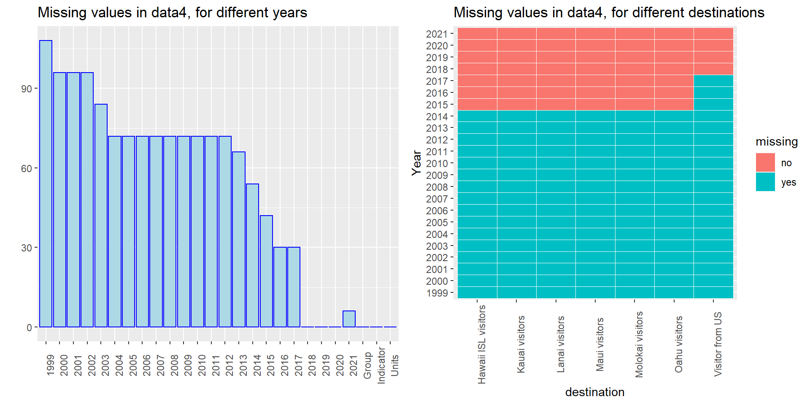

Chapter 5 Results
Summary
From our analysis, we found out that most people come to Hawaii for vacation, and most of them would choose to come again. Additionally, we found people in the north and west US has a higher rate choosing Hawaii travel. As for the Accommodation choice, people tend to rest in hotels and condos. For the destination, Oahu island and Maui island are the most popular ones, while people would spend similar time spending in Oahu, Maui, Kona and Kauai island. Lanai island seems to be the least popular island among all. We have also found that visitors from Illinois, Idaho, Georgia, Florida and some other southern states could have a clustering pattern when it comes to their destinations. Considering the time, we found the huge impact of the financial crisis of 2008 and the pandemic to the visitor number and expenditure in Hawaii. There is a seasonality that July and March is the high season while January and September is the low season for Hawaii tourism.
The graphs and comments are shown below.
5.1 What kind of people would come to Hawaii?
We analyse this question by exploring the average age of people who come to Hawaii, the percentage of people who come more than one time, and the Hawaii travel rate of the states.

From the horizontal barchart we can see that the average age of people that come to Hawaii is 40 to 50 years old. Among all destinations, people who go to Molokai and Lanai are generally older, and people who go to Oahu and Maui island tend to be younger. Also, from the stacked barchart that shows how many visitors come to Hawaii for the first time and how many people have come several times, we can see that more than 60% of people are repeaters, which means that Hawaii is an attractive destination for people who are middle age, and they would always like to come again. Among all the islands in Hawaii, Maui and Kauai islands have the most repeaters, while Lanai island has the lest repeaters.
Apart from the features above, we are also curious about whether people from different states have a preference in going to different islands. We firstly build a map to see how many people from different state are coming to Hawaii. The deeper the color, the more people from the state are coming:

The map clearly shows the number of Hawaii visitors coming from different states over the states’ census population in 2019. By looking at the darkness of the red color, we can find Alaska had the highest Hawaii travel rate in 2019, which is far higher than that of the other states. And there is a rough rule: north and west states tend to have higher Hawaii travel rate. This follows our common sense that people living closer to the destination or living under a colder temperature may have a higher willing to take a holiday in Hawaii.
Then, We applied a static parallel coordinates plot for further analysis:

From the plot we can see that there is no outlier in this dataset. However there are some obvious clusters shown in the plot. For example, Maine, New York, New Jersey, Utha and Vergina is clearly a cluster.To gain a better vision of the parallal coordinate plot, we applied an interactive parallel coordinates plot for the same data:
5.2 Why do people come here?
Secondly, we are curious about the reason why people come to Hawaii:

There are 4 major reasons for people to go to Hawaii islands: for vacation, to visit friends or relatives, for honeymoon or get married and for other purposes. From the plot we can see that most people go to Hawaii for vacation. The second major reason is that people go there to visit friends and relatives. Among the 6 islands, Molokai island has the most visitors who go there to visit friends and relatives, while Maui island has the least. The number of people that go to Oahu for honeymoon or get married is the most comparing to other islands.
5.3 Where do people live during their visit?
Accommodation is also pretty important when we plan a trip. Should we rent a cabin, or should we live in a hotel? The accommodations that most people choose could be a safer choice for us.
From the stacked barchart we can see that the most popular accommodation is hotel and condos are pretty welcome too. Accommodation choices vary from island to island. For Oahu island, the percentage of people who live in hotel outperforms all the other islands, and for Maui island the number of people living in Condos outperforms other islands.
5.4 Which island is more popular?
Now we would like to decide which island we would like to go if our travel time is limit by plotting the number of visitors and the length of them to stay in different islands.
From the two tree maps we can see that most people would visit to Oahu island, then Maui island. Kauai and Kona island are the next popular islands, and Hilo is not as popular as the others. Lanai island is the least popular one. But in terms of length of stay, people who visit Maui iland would stay for the longest time which is approximately 8 days, then Oahu, Kauai and Kona islands have similar length of stay of approximately 6 to 7.5 days. People would stay in Molokai, Hilo and Lanai islands for much less time, which is less than 5 days.
From this interactive plot, the clustering pattern is much easier to observe. For example, Now we can see that Texas, Oklahoma, Kansas, Lowa and Connecicut are clearly a cluster as people from these states would all like to go to Kauai and Kona island instead of Oahu and Maui island.
5.5 How does the total expenditure and visitor number of the US change by years in Hawaii?
The goal of this part is to plot the expenditure and visitor number over time and find some long-term trends or patterns.

We can find the US total expenditure in Hawaii mainly follows a increasing trend. Possible reasons can be the thrive of the tourism in Hawaii and inflation. There is a notable decrease in the US total expenditure from 2007 to 2009. Similar to our homework question, the financial crisis of 2008 may be able to explain this decrease. And the expenditure data of 2020 is missing for some reason, which makes us unable to check the influence of the pandemic to the US total expenditure. But at least we can see the expenditure of 2021 still followed the increase trend. Similarly, the US total visitors in Hawaii also follows a increasing trend with the same decrease from 2007 to 2009. This time we have the 2020 data. And we can find there did exist a huge decrease in the number of visitors to Hawaii on 2020. The pandemic had a great influence to the visitor number.
5.6 How does the total number of visitors change in seasons?
After looking at the long-term trend in the previous section, we want to see some seasonality here. We will plot and compare the total number of visitors versus months.
We can find that in the years without the pandemic, July is the peak of the visitor number, and March is another smaller peak. And the smallest visitor number occurs on September or January. We can find July and March represent summer holiday and spring holiday respectively. September and January represent the end of summer holiday and winter holiday respectively. It is very interesting to find the off seasons occur right after the holidays. 2020 is the special year with the pandemic. We know Covid started in the US at around March 2020. And we can find the visitor number rapidly decreased to around 0 and lasted for more than 5 months. We can find the impact of the pandemic clearly.